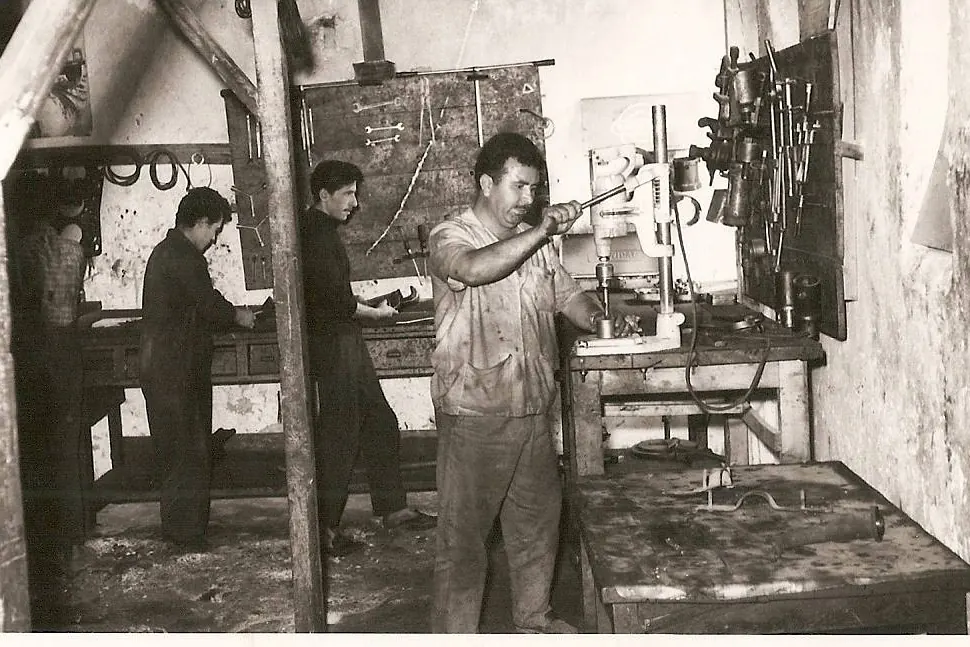

Aracınızın tüm ihtiyaçları için tek noktadan çözüm
Hizmetlerimiz · Volvo, Mercedes-Benz ve Volkswagen · Ankara
Hizmetlerimiz · Volvo, Mercedes-Benz ve Volkswagen · Ankara
| No | Hizmet | Kapsam | Motor | Şanzıman | Fren & Süsp. | Elektronik | Kaporta | Boya | Parça | Volan kaşesi |
|---|---|---|---|---|---|---|---|---|---|---|
| 01 | Bakım & Onarım | Yıllık ve kilometre bakımları; orijinal ya da 1. sınıf muadil parça. | VOLAN | |||||||
| 02 | Yedek Parça | Orijinal ve 1. sınıf muadil parça temini. | VOLAN | |||||||
| 03 | Araç Arıza Tespiti | Güncel cihazlarla bilgisayarlı arıza tespiti. | ||||||||
 03 · Araç Arıza Tespiti
Arıza lambası yandığında ya da araçta bir sorun hissettiğinizde, güncel cihazlarla bilgisayarlı arıza tespiti yapılır. Servis kaşesi
| ||||||||||
| 04 | Sigorta / Kasko Onarım İşlemleri | Hasar ihbarından teslimata kadar süreci biz takip ederiz. | VOLAN | |||||||
| 05 | Elektronik Sistem Onarımları | Elektrik ve elektronik arızaların tespiti ve onarımı. | VOLAN | |||||||
| 06 | Kaporta | Hasar onarımı ve mini onarım. | VOLAN | |||||||
| 07 | Boya | Boya fırınında, aracınızın orijinal rengine uygun boya. | VOLAN | |||||||
| 08 | Mekanik Onarım | Arıza tespitinden parça onarımına mekanik işler. | VOLAN | |||||||